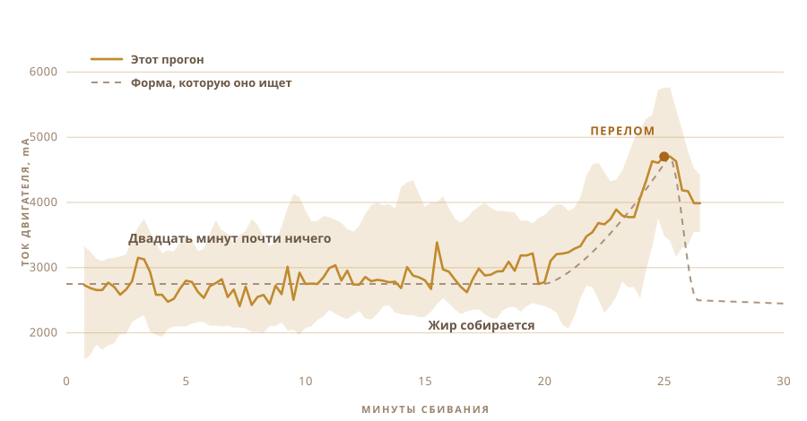

01
Я его только ел
Гхи, которое я знаю, приезжало из деревень. В банках из-под чего-то другого, от людей, которые делают его одним и тем же способом так давно, что там никто не считает это умением.
На вкус оно не похоже на магазинную банку.
А сам я не сделал ни одной партии. Я не знал, сколько держать молоко, каким холодным должен быть йогурт и как должна звучать кастрюля, когда всё готово.
02
Оно начинается с йогурта, а не со сливок
Промышленное гхи почти всегда начинается со сливок. Традиционный путь начинается на день раньше, иногда на два, со сливок, а точнее с уваренного цельного молока, которое заквашивают в йогурт и оставляют киснуть на ночь.
Это скисание и есть главное, потому что без него получается просто топлёное масло. Оно прекрасное, но это не гхи.

03
Два дня на столе
Тёплое молоко, ложка вчерашнего йогурта, размешать, и дальше всю ночь не трогать, пусть бактерии работают. Моё простояло два дня.
Это ферментация, и это тот шаг, который промышленная версия пропускает. Живые культуры, в основном лактобактерии, разбирают лактозу и превращают её в молочную кислоту. Молоко густеет. Киснет. К утру это уже другое вещество.
Отсюда берётся всё хорошее. Расщеплённая лактоза, которая легче усваивается. Жиры и белки, которые становятся доступнее. Масляная кислота, та самая короткоцепочечная жирная кислота, на которой и живёт слизистая кишечника, и в гхи, сделанном так, её больше, чем в гхи, взбитом из свежих сливок.
Аюрведа прописывает именно эту версию уже очень давно.
Что я могу сказать точно, так это что запах даёт закваска. Этот запах и есть главная причина всё это затевать.

04
У метода есть название
Билона. Йогурт в кастрюлю, туда опускается деревянная мутовка, и дальше её гоняют туда-сюда, пока масло не сдастся и не всплывёт.
Мутовку я сделал сам. Те, что я нашёл в интернете, были клееные, и ни один продавец не сказал, что это за клей. Такая штука полчаса стоит в еде, так что гадать я не собирался. Твёрдое дерево, нержавеющие винты, прикручено к валу мешалки, который и так лежал у меня в ящике.
Четыре лопасти и стальной обруч, который держит их под прямым углом. Всё на винтах, так что разбирается обратно.


Это занимает около получаса, и почти всё это время ничего интересного не происходит. Ровно та работа, которую мечтаешь передать кому-нибудь ещё.

05
И я спросил
Люди, которые действительно умеют это делать, не работают по рецептам, и ни одного из них не было у меня на кухне. Так что вопросы ушли в окно чата.
Сколько заквашивать. Насколько холодным держать йогурт. С какой скоростью можно крутить, пока трение не нагрело кастрюлю и не испортило масло. Каждый ответ открывал ещё три.
А потом я задал тот вопрос, который на самом деле имел в виду. Ты не мог бы просто сделать это?
Вопрос перестал быть о том, как мне сделать гхи. Он стал о том, не сделаешь ли ты его за меня.
06
Зверь
Аккумуляторная дрель. Мутовка из ящика и хозяйственного магазина. Пластиковый контейнер для электроники, разделочная доска вместо хребта и большая жёлтая кнопка стоп, потому что у всего, где есть мотор, она должна быть.
Это почти ничего не стоило, и это по нему видно. И в этом, в общем, весь смысл.

- МоторАккумуляторная дрель в зажиме
- МутовкаТвёрдое дерево и нержавейка, сделана, а не куплена
- МозгRaspberry Pi, пишет раз в секунду
- ЧувствоТок двигателя при сбивании, термодатчик при вытапливании
- СтопОдна большая кнопка, разрывает питание
07
Крутить легко
Крутить йогурт может кто угодно. Трудно понять, когда остановиться.
Остановишься рано, получишь густую пену. Перекрутишь, и масло уйдёт обратно в пахту, и ты его потеряешь. Окно сдвигается в зависимости от жирности, температуры и от того, как идёт день.
Никто не засекает время. Это слышно. Плеск из ровного кружения превращается в неровные шлепки, и вот тогда лезешь рукой.

08
Одно чувство, и только одно
Поэтому я дал ей одно чувство. Она следит за тем, насколько тяжело тянет мотор.
Двадцать минут ничего. Нагрузка держится около 2700 mA и слегка гуляет. Потом жир начинает собираться, и дрели приходится продавливать что-то более густое. Нагрузка поднимается до 4700, держится там мгновение, а потом масло отпускает жидкость и нагрузка падает.
Никакой камеры, никакой модели, ничего умного. Число, которое растёт, а потом падает.

09
Она остановилась сама
Она работала. Я ушёл заниматься другим, а когда вернулся, она уже выключилась сама.
Бледно-жёлтое масляное зерно в мутной пахте. Никто не сказал ей время. Она вывела его из единственного, что могла почувствовать.

10
Дальше снова руками
Собрать зерно и спрессовать в шар. Промывать холодной водой, раз за разом, пока вода не перестанет идти мутной.
Каждая капля пахты, которую оставишь, сгорит на следующем шаге. Эту часть я не автоматизировал и не хотел.


11
Второе чувство
Нагрузка на мотор говорила установке, когда остановиться. Вытапливание ставит другую задачу, потому что здесь ищешь не момент, а пытаешься его удержать.
Поэтому кастрюля отправляется на плитку с термодатчиком внутри, и регулятор мощности включает и выключает плитку, чтобы число оставалось там, куда ты его поставил. Я выставил 250 F, это около 121 °C, и там оно простояло примерно час.
Человек, который час смотрит на кастрюлю, обязательно отвлечётся. Регулятору не бывает скучно.

12
Час наблюдения за цветом
Масло в кастрюлю, и дальше оно в основном идёт само.
Оно тает. Оно шумно пенится белым. Вода выкипает, и шум стихает. Молочные белки оседают и буреют, а запах уходит от масла к чему-то поджаренному. Когда кастрюля затихает и жидкость идёт прозрачной, всё готово.
Я всё равно смотрел почти всё время, потому что на это приятно смотреть. Но ничего из того, что я делал, не изменило результат.


13
Гхи
Прозрачное, янтарное, и пахнет как те банки, из которых я ел в детстве. Это была единственная проверка, которая у меня была, и оно её прошло.

В банки оно пошло тёплым и прозрачным. К следующему дню застыло бледным и зернистым.
Я наклеил на них этикетку. Слово на ней означает гхи по-непальски, а код рядом возвращает на эту страницу.

Первая партия, которую я сделал. Хотя сделал её не совсем я.
14
Во второй раз девять банок
Первый прогон дал две банки, и это было всё. Этот заполнил перила.
Девять банок. Две высокие с винтовой крышкой ближе к камере, шесть с бугельным замком посередине и одна маленькая у дальнего столба.

Этикетка теперь другая. На первых двух банках была розовая бумажная, с надписью OUR STORY сверху. Эти из прозрачной плёнки, так что гхи просвечивает из-за букв, а код рядом всё так же возвращает на эту страницу.


Оно застыло тем же бледно-жёлтым, что и первая партия, в чём я не был уверен.
15
Что я хочу дальше
Сейчас машина знает две вещи. Когда перестать сбивать и какую температуру держать.
Дальше я хочу дать ей глаза и уши. Камеру, чтобы она сама видела, как опадает пена и буреет осадок, и сама выбирала нагрев, а не держала число, которое я ей дал. И микрофон, потому что готовность гхи во многом слышна по тому, как затихает кастрюля.
Дрель, наверное, могла бы взять и вторую смену. Как только масло оказывается в кастрюле, его надо мешать, а мотор там уже стоит и ничего не делает.
А дальше цикл. Поменять время закваски, поменять скорость, попробовать, что вышло, оставить то, что сработало, и заново. Тридцать прогонов, и она придёт туда, куда я бы и не подумал посмотреть.
Я всё равно никогда толком не знал, куда смотреть.
Из чего она собрана, где происходит измерение и за чем установка на самом деле следит.